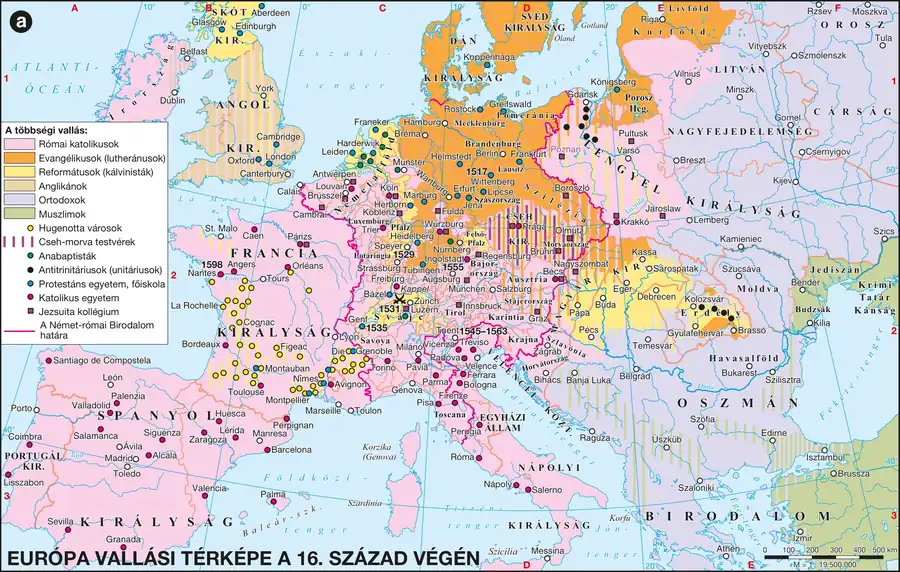

A reformáció előzményei és Luther fellépése
Be tudod mutatni a reneszánsz pápaság válságát, a búcsúcédula-árusítás körülményeit, és pontosan fel tudod sorolni Luther Márton alaptanításait.
A reneszánsz pápaság válsága
A XVI. század elejére a pápaságra is hatott a humanizmus és a reneszánsz szellemisége: erőteljes elvilágiasodás jelentkezett a legfelső egyházi vezetésben is — a pápák mecénásként, itáliai fejedelmekként viselkedtek, nem elsősorban lelkipásztorokként. Az elvilágiasodott egyházon belül a század elején felerősödött egy reformmozgalom, amely bírálta a pápaság politikáját, és különösen a búcsúcédulák árusítását, valamint annak módját — a búcsú (a bűnök alóli feloldozás) pénzért történő megvásárolhatósága mélyen sértette sok hívő vallási érzését.
A kilencvenöt tétel
Luther Márton, ágostonrendi szerzetes 1517. október 31-én Wittenbergben közzétette 95 tételét — ez vált a reformáció kezdetének jelképévé. A tételek eredetileg vitaindító egyetemi dokumentumként, elsősorban a búcsúcédula-kereskedelem ellen íródtak, de gyorsan az egész katolikus egyházszervezetet érintő vitává szélesedtek.
Luther alaptanításai
Luther tanítása négy latin alapelvre (az úgynevezett „solák”) épült:
| Alapelv | Jelentése |
|---|---|
| Sola fide (egyedül a hit) | egyedül a hit üdvözíthet; a jó cselekedetek a hit bizonyítékai, de önmagukban nem vezetnek üdvösséghez |
| Sola gratia (egyedül a kegyelem) | egyedül az isteni kegyelem juttathatja el az embert az üdvösséghez; a bűnöket egyedül Isten bocsáthatja meg |
| Sola Scriptura (egyedül az Írás) | a hit egyetlen forrása a Biblia |
| Solus Christus (egyedül Krisztus) | az üdvösséghez egyedül Krisztuson keresztül vezet az út; nem szükséges a gyónás és a papság közbenjárása |
Ebből következett az „minden hívő pap” elve: a papságra mint Isten és az egyház közötti közvetítőre nincs szükség, a lelkészek feladata a prédikálás, hittani kérdésekben pedig mindenki kifejtheti nézeteit. Luther elvetette mindazt, ami nincs benne a Bibliában, és nem is igazolható belőle: a pápai tévedhetetlenséget, a misét, a szerzetességet, a cölibátust, a nagyszámú ünnepnapot, a zarándoklatokat és az egyházi fényűzést. A hét szentségből csak a keresztelést és a kétszín alatti (kenyér és bor) úrvacsorát tartotta meg. A liturgiában egyszerűsítette a szertartásokat, és bevezette a nemzeti nyelvek használatát. EA lutheri tanításokat Melanchthon Fülöp fogalmazta meg 28 tételben; ezt 1530-ban az augsburgi birodalmi gyűlésen fogadták el (innen az „ágostai”, azaz augsburgi hitvallás elnevezés).
A négy „sola” nem négy külön elv, hanem egyetlen logikai lánc: ha egyedül a hit üdvözít (sola fide), akkor nincs szükség jócselekedet-„vásárlásra” (búcsú ellen); ha egyedül a Biblia a mérce (sola Scriptura), akkor minden, ami nincs benne, elvethető (szerzetesség, cölibátus); ha egyedül Krisztuson át vezet az út (solus Christus), akkor nincs szükség papi közvetítésre (minden hívő pap). Ez a lánc mutatja, miért nem esetleges elemek Luther tanításai, hanem egymásból következnek.
Kötelező adatok
| Fogalmak | Személyek | Kronológia |
|---|---|---|
| reformáció, protestáns, evangélikus | Luther Márton | 1517: a reformáció kezdete |
1. forrás
Luther kijelenti, hogy amikor Urunk és Mesterünk, Jézus Krisztus azt mondta: „Tartsatok bűnbánatot”, azt akarta, hogy a hívők egész élete bűnbánat legyen — nem pusztán egyetlen szentségi cselekedet. Bírálja azokat, akik azt hirdetik, hogy amint az érme csengve hull a persely fenekére, a lélek azonnal kiszabadul a tisztítótűzből: ez emberi tanítás, nem a Biblia szava. A pápának nincs hatalma más büntetést elengedni, mint amit ő maga vagy az egyházi jog szabott ki.
- Milyen felfogást állít szembe Luther a bűnbánat egyszeri, szentségi cselekedetként való értelmezésével?
- Milyen gyakorlatot bírál konkrétan a második idézett rész?
- Milyen korlátot szab Luther a pápai hatalomnak ebben a részletben?
Ellenőrző feladatok
A helvét reformáció és a radikális irányzatok
Be tudod mutatni Kálvin tanításait és genfi egyházszervezetét, és meg tudod különböztetni egymástól a reformáció négy fő irányzatát: evangélikus, református, anabaptista és antitrinitárius.
A helvét (svájci) reformáció
A svájci reformáció elindítója Ulrich Zwingli volt, aki Lutherhez hasonló nézeteket vallott, de az úrvacsora értelmezésében eltért tőle. Zwingli halála után a Franciaországból menekülő, 1534-ben Svájcban letelepedett Kálvin János (Jean Calvin) fejlesztette tovább a helvét reformáció tanait; fő műve A keresztény vallás tanítása címmel jelent meg. Kálvin szerint Isten a világmindenség abszolút mindenható és mindentudó szuverén ura — az ember nem szerezhet érdemeket, és nem szegülhet szembe Isten akaratával. Ebből következik a predesztináció (eleve elrendelés) elve: Isten akarata már a születéskor meghatározza minden ember sorsát. Az erényes, Istennek tetsző életet élő polgár tiszta erkölcsű, szorgalmas, takarékos; Kálvin szerint a tisztességes kamatszedés nem bűn — ez a tanítás közel állt a fejlődő polgári-kereskedői réteg gondolkodásához.
Míg Luthert inkább az egyén hite és megigazulása érdekelte, addig Kálvin az egyházszervezés területén alkotott maradandót: demokratikus egyházszervezetet hozott létre, amelyben az egyházközösségeket a lelkipásztorokból és világi hívekből álló testület, a presbitérium együttesen irányította. Olcsó, minden fényűzéstől mentes egyházat szervezett.
Kálvin 1541-ben Genfben telepedett le („kálvinista Róma”), ahol egy teokratikus (vallási törvények szerint működő) államot hozott létre: szigorúan szabályozta az emberek mindennapi életét — templomba járási kényszer, valamint bujálkodás-, káromkodás-, kocsmábajárás-, kockajáték- és tánctilalom volt érvényben. A 15 ezer lakosú Genfben négy év alatt 900 embert tartóztattak le, 58-at kivégeztek.
A reformáció négy fő ága
| Irányzat | Vezető alak | Fő jellemző | Elterjedés |
|---|---|---|---|
| Evangélikusok (lutheránusok) | Luther Márton | a négy „sola”, két szentség, nemzeti nyelvű liturgia | Észak- és Kelet-Németország, Skandinávia |
| Reformátusok (kálvinisták) | Kálvin János | predesztináció, presbiteri egyházszervezet | Svájc, Franciaország, Németalföld, Skócia, Magyarország |
| Anabaptisták (újrakeresztelők) | Münzer Tamás | felnőttkori keresztség, vagyonközösség, a hierarchia elvetése | Németország |
| Antitrinitáriusok (unitáriusok) | Szervét Mihály; Dávid Ferenc | a Szentháromság és Jézus isteni mivoltának elutasítása | Lengyelország, Erdély |
Az anabaptisták a reformáció népi, radikális irányzata voltak: elvetették a gyermekkori keresztséget, a közösségbe belépőket felnőtt korban újra megkeresztelték, és vagyoni egyenlőséget (vagyonközösséget), valamint az egyházi és világi hierarchia eltörlését hirdették. Jelentős szerepet játszottak az 1524–1525-ös német parasztháborúban.
Az antitrinitáriusok nem fogadták el Jézus isteni mivoltát és a Szentlélek létét. Legismertebb korai képviselőjük Szervét Mihály (Miguel Serveto) spanyol orvos és teológus volt, akit nézetei miatt Kálvin 1553-ban Genfben megégettetett — ez a végzetes esemény jól mutatja, hogy a reformáció főáramai (evangélikus, református) sem voltak türelmesek a radikálisabb irányzatokkal szemben. Az antitrinitarizmus unitárius néven terjedt el Magyarországon és Erdélyben.
A Szervét-ügy fontos árnyalás: a vallási türelem fogalma a XVI. században még nem jelentette azt, amit ma értünk alatta. Kálvin, aki maga is üldözött reformátorként menekült Genfbe, ott maga is halálra ítélt egy más nézetet valló teológust. Ez a kettősség — üldözött és üldöző egy személyben — jó esszéérv a reformáció türelem-kérdésének árnyalt bemutatásához.
Kötelező adatok
| Fogalmak | Személyek | Topográfia |
|---|---|---|
| református, unitárius; Epresbiter, predesztináció | Kálvin János | EGenf |
2. forrás
A tanács elrendeli, hogy minden lakos köteles vasárnaponként a templomi istentiszteleten megjelenni, munkaidőben csavargás és semmittevés nem engedélyezett. Tilos a kártya- és kockajáték, a mértéktelen táncmulatság és a kocsmák látogatása esti órákban. Aki e rendelkezéseket megszegi, a városi tanács elé idézendő, és a vétség súlyosságától függően megrovásban vagy pénzbüntetésben részesítendő, ismételt vétség esetén szabadságvesztéssel is sújtható.
- Milyen típusú magatartásokat szabályoz a rendtartás?
- Milyen szóval nevezi a történettudomány az ilyen, vallási törvények szerint működő államberendezkedést?
- Milyen társadalmi réteg számára lehetett vonzó Kálvin tanítása a szorgalom és a takarékosság erényének hangsúlyozásával?
Ellenőrző feladatok
Vallásháborúk a XVI. században
Be tudod mutatni a német birodalmi vallásháború menetét és az augsburgi vallásbékét, valamint a francia vallásháborúk fő állomásait a Szent Bertalan-éjtől a nantes-i ediktumig.
Vallásháború a Német-római Birodalomban
X. Leó pápa 1520-ban eretneknek nyilvánította és kiközösítette Luthert, V. Károly császár pedig az 1521-es wormsi birodalmi gyűlésen birodalmi átokkal sújtotta. Az 1529-es speyeri birodalmi gyűlésen kimondták a lutheri tanok terjesztésének tilalmát, ami ellen a reformáció hívei tiltakoztak — innen ered a „protestáns” elnevezés. 1531-ben a protestáns fejedelmek megalakították a schmalkaldeni szövetséget, 1538-ban pedig a katolikus rendek a Szent Ligát. A fegyveres összecsapás 1546–1547-ben a császári (katolikus) seregek győzelmét hozta.
1555-ben, V. Károly öccsének, Ferdinándnak köszönhetően megszületett az augsburgi vallásbéke, amelynek három fő pontja volt:
- a szabad vallásválasztás jogát a tartományok uraira bízták — „akié a föld, azé a vallás” (cuius regio, eius religio) elve;
- megtiltották az erőszakos vallásváltoztatásra kényszerítést;
- a protestánsok megtarthatták a kezükre került egyházi javakat.
Fontos korlátozás: az augsburgi vallásbéke csak a katolikusokat és a lutheránusokat (evangélikusokat) ismerte el egyenjogúnak — a kálvinisták (reformátusok) jogi elismerésére csak 1648-ban, a vesztfáliai békében került sor.
Vallásháború Franciaországban
I. Ferenc után II. Henrik (1547–1559) lett a francia király, aki keményen üldözte a protestánsokat. Halála után kiskorú fiai kerültek trónra, helyettük és mellettük anyjuk, Medici Katalin kormányzott régensként, aki megpróbált egyensúlyozni a Navarrai-Bourbon család vezette hugenották (franciaországi kálvinisták) és a Guise család vezette katolikus tábor között.
1572. augusztus 23–24. éjjelén (a Szent Bertalan-éjen) a Bourbon Henrik és Medici Margit esküvőjére Párizsba érkezett hugenottákat a katolikusok lemészárolták; magát Henriket elfogták és fogva tartották, de megszökött. A vallásháború záró szakasza a „három Henrik háborúja” volt: a katolikusokat vezető Guise-ek spanyol segítséget kaptak; III. Henrik király — bár a katolikusokat támogatta, félve a spanyol befolyástól — Bourbon Henrik oldalára állt. 1588-ban III. Henrik meggyilkoltatta Guise Henriket, 1589-ben pedig egy domonkos szerzetes ölte meg magát III. Henrik királyt is. A trón várományosa így Bourbon Henrik lett, akinek azonban még meg kellett küzdenie érte.
Bourbon IV. Henrik (1589–1610) csak 1593-ban tudta elismertetni uralmát a katolikus püspökökkel is, cserébe rekatolizált — innen ered a híres mondás: „Párizs megér egy misét”. Ezután legyőzte a spanyolokat, és 1598-ban békét kötött velük. 1598-ban, a vallásháborút lezárandó, kiadta a protestánsok érdekeit védő nantes-i ediktumot — ez volt a korban az első kísérlet arra, hogy különböző vallású emberek együtt, egymás mellett éljenek. Az ediktum szerint: a katolikusok teljes vallásszabadságot élveznek, és visszakapják minden régi birtokukat; a hugenották is kötelesek tizedet fizetni, de szabadon élhetnek, vallásukat azonban nyilvánosan csak a kijelölt városokban gyakorolhatják (Párizsban és a királyi udvarban nem); bármilyen tisztséget betölthetnek, és fenntarthatják vallásgyakorlásukhoz szükséges intézményeiket. Védelmük érdekében a király ún. garnizonokat (erődöket) bocsátott a hugenották rendelkezésére.
Két vallásbéke, két elv — ne keverd össze! Az augsburgi vallásbéke (1555) a tartomány urára bízta a vallás megválasztását (a hívőknek nem volt egyéni választása); a nantes-i ediktum (1598) ezzel szemben az egyéni vallásszabadságot — igaz, térben korlátozva — biztosította a hugenották számára. Ez a különbség (kollektív vs. egyéni vallásszabadság) gyakori összehasonlító esszétéma.
Kötelező adatok
| Fogalmak | Személyek | Kronológia |
|---|---|---|
| vallási türelem | EIV. Henrik, Medici Katalin | E1555: augsburgi vallásbéke 1572: Szent Bertalan-éj 1598: nantes-i ediktum |
3. forrás
Európa vallási térképe a 16. század végén
A reformáció irányzatainak területi elterjedése és a felekezeti megosztottság vizsgálható.

A birodalmi rendek megállapodnak, hogy minden birodalmi rendnek szabad választása legyen: a katolikus vagy az ágostai (lutheri) hitvallást követi-e tartományában. Az alattvalók, akik nem kívánják követni uruk vallását, szabadon elköltözhetnek vagyonuk veszélyeztetése nélkül. Tilos a másik felekezet híveit fegyverrel vallásváltoztatásra kényszeríteni. Ami az egyházi javakat illeti, amelyek 1552 óta a protestánsok kezén vannak, azokat ezután is megtarthatják.
- Ki döntött a forrás szerint egy adott tartomány vallásáról?
- Milyen lehetőség állt nyitva azok előtt, akik nem akarták követni uruk vallását?
- Melyik felekezetet nem említi a forrás az elismertek között, és mikor kapott ez a felekezet végül elismerést?
Ellenőrző feladatok
A reformáció Magyarországon
Be tudod mutatni, milyen tényezők segítették a reformáció gyors magyarországi terjedését, és ismered az egyes irányzatok elterjedésének területeit és jeles képviselőit.
A gyors terjedés okai
A reformáció egyes ágainak megjelenése Magyarországon gyors folyamat volt, amelyet az jellemzett, hogy a hívek gyakran tértek át egyik ágról, irányzatról a másikra, illetve vegyítették az egyes ágak hitelveit. A reformáció elsősorban a hódoltsági területen és a Tiszától keletre terjedt gyorsan, a Dunántúlon csak a XVI. század végén hódított teret. A XVI. század végére a lakosság több mint fele református, negyede evangélikus volt, a maradék rész pedig antitrinitárius, katolikus vagy ortodox.
A magyarországi elterjedést elősegítő tényezők egy része megegyezett az európai okokkal (a katolikus egyház válsága, a lakosság új eszmék és hit iránti igénye), de volt egy sajátos magyar tényező is: az ország három részre szakadásának folyamatában a katolikus egyház súlyos veszteségeket szenvedett, meggyengült, és így indirekt módon megkönnyítette a reformáció terjedését. A mohácsi csatában a 12 magyar püspökből 7 elesett; az egyházi vezetők maguk is részt vettek a hatalmi harcokban, ezért „nem maradt idejük” a hívekkel foglalkozni; a háborúkban sok helyütt elvesztek az egyház birtokai, vagy azok jövedelmét a hadviselésre kellett fordítani, ami tovább csökkentette az egyház anyagi erejét.
Az egyes irányzatok terjedése
A lutheri tanok terjedését a Wittenbergbe járó diákok és a budai német polgárok, illetve az uralkodói udvartartás segítette elő. Elsőként a szepességi és erdélyi szászok városaiban terjedt el, majd a magyarlakta vidékeken, a német végvári katonaság és a szlovákság körében. Az első magyarországi hitvallást 1546-ban Leonhard Stöckel szerkesztette a felső-magyarországi városok lakói számára. Korai magyar reformátorok: Dévai Bíró Mátyás (az első magyar ábécéskönyv szerzője) és Heltai Gáspár (a XVI. század leghíresebb nyomdásza).
A református (kálvini) tanok az 1550-es évektől terjedtek gyorsan, főként a Tiszántúlon. Jelentős prédikátorok voltak Kálmáncsehi Sánta Márton, Szegedi Kis István és Méliusz Juhász Péter, aki megfogalmazta a debrecen-egervölgyi Hitvallást. A kálvinizmus a magyar köznemesség, a mezővárosi polgárság, a parasztság és a magyar végvári katonaság körében terjedt el a legszélesebben.
Az antitrinitárius (unitárius) irányzat elterjedésében döntő szerepe volt Dávid Ferencnek, aki katolikusként született, 1557-ben evangélikus, majd református, 1576-tól pedig unitárius püspök lett — János Zsigmond erdélyi fejedelem udvari lelkésze volt. Egyháza elsősorban Erdélyben növelte létszámát, ahol a magyar lakosság több mint fele az unitárius egyházhoz tartozott.
Iskolák és könyvkiadás
A protestáns iskolák közül a legjelentősebb református kollégiumok Debrecenben, Sárospatakon, Pápán, Nagyváradon, Gyulafehérváron és Marosvásárhelyen működtek; az evangélikusok híres kollégiuma Eperjesen, az unitáriusoké Kolozsváron volt. A könyvkiadás is fellendült: Pesti Gábor lefordította a négy evangéliumot (Bécs, 1536); Sylvester János elkészítette az Újtestamentum fordítását (Sárvár közelében, 1541); Károli Gáspár Biblia-fordítása (Vizsoly, 1590) volt az első teljes magyar nyelvű Biblia. EMisztótfalusi Kis Miklós a XVII. század második felének kiemelkedő nyomdásza volt, aki a magyar helyesírás kialakításában is fontos szerepet játszott.
Kötelező adatok
| Fogalmak | Személyek | Topográfia |
|---|---|---|
| reformáció, protestáns, evangélikus, református, unitárius | Károli Gáspár; EMéliusz Juhász Péter, Misztótfalusi Kis Miklós | Sárospatak |
4. forrás
A szerző elmondja, hogy a mohácsi csatavesztés után az ország egyházi vezetése megroppant: a tizenkét püspök közül heten életüket vesztették a csatatéren, a megmaradt főpapok pedig a hatalmi küzdelmekbe bonyolódtak, ahelyett hogy a rájuk bízott nyáj lelki gondozásával törődtek volna. Az egyházi birtokok jövedelmét sok helyen a háborús készülődésre fordították, így a papság elszegényedett, és nem tudta ellátni feladatát.
- Milyen közvetlen emberveszteségről számol be a forrás a mohácsi csatával kapcsolatban?
- Milyen két további okot nevez meg a forrás az egyházi vezetés meggyengülésére?
- Milyen összefüggést lát a forrás az egyház meggyengülése és a reformáció terjedése között, ha közvetlenül nem is mondja ki?
Ellenőrző feladatok
Az ellenreformáció és a katolikus megújulás
Meg tudod különböztetni az ellenreformáció és a katolikus megújulás fogalmát, be tudod mutatni a jezsuita rendet és a tridenti zsinat döntéseit, és ismered Pázmány Péter tevékenységét.
A jezsuita rend
III. Pál pápa (1534–1549) volt az utolsó reneszánsz és az első ellenreformációs pápa. 1540-ben jóváhagyta a Jézus Társasága, azaz a jezsuita rend működését, amelyet Loyolai Szent Ignác alapított. A jezsuiták célja a misszió és a (vissza)térítés volt — a protestáns lelkészekhez hasonlóan ők is anyanyelven prédikáltak. A rend élén a generális állt (közismert nevén „Fekete pápa”), akit élethossziglan választottak. Kemény, katonás fegyelem jellemezte a rendet, amely nagy gondot fordított a tanításra és nevelésre: Loyolai Ignác 1551-ben megalapította a Collegium Romanumot, a pápai főiskolát, amely Gregoriana néven ma is működik. A jezsuiták jól képzett hittudósok és a pápaság legjobb diplomatái voltak, akik idővel nemcsak az egyházon belül, hanem az egyes országok politikai életében is meghatározó szerephez jutottak.
E1542-ben újra felállították a bíborosokból álló inkvizíciót (Szent Hivatal Kongregációja). IV. Pál pápa idején (1555–1559) a Szent Hivatal Kongregációja összeállította a tiltott könyvek jegyzékét (Index librorum prohibitorum), amelyre azok a könyvek kerültek fel, amelyeket az egyház tanításaival ellentétesnek találtak.
A tridenti zsinat és a katolikus megújulás
Fontos fogalmi különbségtétel: az ellenreformáció szűkített értelemben a reformáció híveinek büntetését, tanaik betiltását jelenti, míg emellett lassan kibontakozott a katolikus megújulás is — az egyház önvizsgálata és belső reformja. A tridenti zsinat (1545–1563) — amelyet V. Károly császár szorgalmazására III. Pál pápa hívott össze — a katolicizmus megújulásának központi fóruma lett. A zsinat szembenézett azokkal a problémákkal, amelyek a reformáció elindulásához vezettek, és olyan döntéseket hozott, amelyekkel a katolikus egyházat „versenyképessé” tették a protestánsokkal szemben:
- megtiltották a búcsúcédulák árusítását és az egyházi tisztségek halmozását;
- kötelezték a püspököket, hogy állandóan egyházmegyéjükben tartózkodjanak — a papság elsődleges feladata a szolgálat, a hívek lelki gondozása lett;
- a hitviták tapasztalataiból okulva szemináriumokat állítottak fel a papság iskolázottságának (bibliaismeretének) növelésére;
- nyomdákat alapítottak;
- a katolikus liturgia látványosabbá, ünnepélyesebbé vált (búcsújárások, körmenetek).
A megújulás eredményeként sikerült megállítani a protestantizmus gyors terjedését, és Franciaországban, Csehországban, Ausztriában, valamint a királyi Magyarországon a katolicizmus visszanyerte híveit.
A katolikus megújulás Magyarországon — Pázmány Péter
A reformáció terjedése nyomán Magyarországon a katolicizmus visszaszorult, és csak néhány főnemes, egy-egy nagyobb város (Pozsony, Nagyszombat) lakossága és a Székelyföld maradt katolikus. A katolikus megújulás első kiemelkedő magyar képviselője Oláh Miklós esztergomi érsek volt (1553–1568), aki újjászervezte az egyházi intézményrendszert és letelepítette Magyarországon a jezsuitákat.
Kései utódja az esztergomi érseki székben Pázmány Péter (1616–1637) volt, akinek megközelítése alapvetően eltért a hatalmi kényszertől: a rekatolizációt térítés és meggyőzés útján tartotta megvalósíthatónak — úgy vélte, a protestáns rendekkel való kompromisszum lehet sikeres, a hatalmi helyzetből végrehajtott ellenreformáció nem. Bevezette az évenkénti plébánialátogatást, amelynek során ellenőrizték a papság feladatainak elvégzését. Kivételes műveltségét és teológiai ismereteit kihasználva több hitvitát is folytatott a kor protestáns prédikátoraival — 1613-ban jelent meg Az Isteni Igazságra vezérlő kalauz című összegző műve, amelynek magyarul írt, jól követhető logikájú hitvitázó iratai a magyar nyelvet is gazdagították. Sokat tett a papképzésért: 1622-ben Bécsben megalapította a róla elnevezett papnevelő intézetet (Pázmáneum), 1635-ben pedig Nagyszombaton létrehozta az egyetemet — ez az első, a mai napig folyamatosan működő magyar egyetem (a mai ELTE elődje).
Pázmány szemlélete az egyik legjobb esszéérv a témakörben: ő maga is ellenreformációs korban élt, mégis módszertanilag a katolikus megújulás emberének tekinthető, mert a hatalmi kényszer helyett a meggyőzést részesítette előnyben. Ez a kettősség — a személy és a korszak jellemzőinek szétválasztása — a „történelmi gondolkodás” szempontnál hoz pontot.
Kötelező adatok
| Fogalmak | Személyek | Kronológia |
|---|---|---|
| ellenreformáció, katolikus megújulás, jezsuiták; Erekatolizáció | Pázmány Péter, Loyolai (Szent) Ignác | 1545: a tridenti zsinat megnyitása |
5. forrás
Az érsek úgy vélekedett, hogy a hitéből kitért embert nem karddal, hanem érveléssel, meggyőzéssel kell visszavezetni az igaz hitre. Ezért maga is gyakran vitatkozott protestáns lelkészekkel, és magyar nyelven írt könyveiben igyekezett világosan, mindenki számára érthetően cáfolni a protestáns tanításokat. Emellett gondját viselte annak is, hogy a katolikus papság kellő felkészültséggel rendelkezzen, ezért fiatal papokat küldött külföldi egyetemekre tanulni, és Nagyszombaton egyetemet is alapított.
- Milyen módszert részesített előnyben Pázmány a hittérítésben a hatalmi kényszerrel szemben?
- Milyen két konkrét intézkedést hozott a papság felkészültségének növelésére?
- Milyen nyelven írta hitvitázó műveit, és ennek milyen másodlagos hatása lett a forrás szerint?
Ellenőrző feladatok
A harmincéves háború és a vesztfáliai béke
Be tudod mutatni a harmincéves háború négy szakaszát, és ismered a vesztfáliai béke vallási, alkotmányjogi és területi rendelkezéseit, valamint hosszú távú hatásait.
Előzmények és a háború kirobbanása
A harmincéves háború (1618–1648) előzményei között szerepelt a Habsburg–francia vetélkedés, a Habsburgok központosítási kísérletei a Német Birodalomban, valamint kiéleződő vallási ellentétek: 1608-ban létrejött a Pfalz vezette Protestáns Unió, 1609-ben a Bajorország vezette Katolikus Liga. A háború 1618. május 23-án robbant ki: a cseh rendek nem fogadták el Habsburg Mátyás utódjául kijelölt II. Ferdinándot. Thurn Mátyás vezetésével két Habsburg-tisztviselőt kidobtak a prágai vár (Hradzsin) ablakán — ez volt a második prágai defenesztráció. Mátyás halála után a cseh rendek II. Ferdinánd helyett a protestánsok vezetőjét, Pfalzi V. Frigyest koronázták királlyá, míg a német fejedelmek Habsburg Ferdinándot (1619–1637) tették meg császárrá.
A háború négy szakasza
| Szakasz | Évek | Fő esemény |
|---|---|---|
| I. Cseh–pfalzi szakasz | 1618–1625 | a Habsburgok 1620. november 8-án Fehérhegynél legyőzték a cseh rendeket; nagy megtorlás (kivégzések, birtokelkobzások), Csehország örökös tartomány lett |
| II. Dán szakasz | 1625–1629 | IV. Keresztély dán király a protestáns államok védelmére hivatkozva támadott, de Tilly és Wallenstein kiszorította; 1629: lübecki béke |
| III. Svéd szakasz | 1630–1635 | II. Gusztáv Adolf svéd király 1631-ben Breitenfeldnél legyőzte Tillyt; 1632-ben Lützennél döntetlen csatában elesett; 1635: prágai béke |
| IV. Francia–svéd szakasz | 1635–1648 | Franciaország (Richelieu) aktívan beavatkozik; egyik fél sem tud döntő győzelmet elérni, béketárgyalások kezdődnek |
A vesztfáliai béke (1648)
A vesztfáliai békerendszert 1648-ban írták alá — a Habsburgok Franciaországgal és Svédországgal kötöttek békét Vesztfália városaiban. A béke három nagy témakörben hozott döntést:
- Vallási határozatok: megerősítették az augsburgi vallásbékét, és immár a reformátusokat (kálvinistákat) is egyenjogúsították az evangélikusokkal és a katolikusokkal — ez zárta le végleg azt a hiányosságot, amit az 1555-ös béke még nyitva hagyott.
- Alkotmányjogi rendelkezések: megerősítették a Német-római Birodalom mintegy 300 fejedelemségét szabadságaikban és jogaikban — vagyis a birodalom politikailag továbbra is szétaprózott maradt.
- Politikai, területi határozatok: kimondták Hollandia és Svájc függetlenségét; Franciaország megszerezte Elzászt, Svédország pedig Elő-Pomerániát.
A háború hatásai a Német-római Birodalomra nézve súlyosak voltak: hatalmas emberveszteség, gazdasági dezintegrálódás és válság sújtotta a térséget. Politikai szempontból a birodalmi (császári) abszolutizmus helyett a fejedelmi (tartományi) abszolutizmusok erősödtek meg — vagyis a háború hosszú távon tovább gyengítette, nem erősítette a központi német hatalmat.
A harmincéves háború paradoxona jó záró esszégondolat: bár vallásháborúként indult (katolikusok vs. protestánsok), a negyedik szakaszban a katolikus Franciaország a protestáns oldalon, a Habsburgok ellen avatkozott be — mert Richelieu számára a francia állami érdek (a Habsburg-hatalom gyengítése) fontosabb volt a vallási szolidaritásnál. Ez mutatja, hogy a XVII. század közepére a nemzetállami érdek kezdett felülkerekedni a vallási szempontokon.
Kötelező adatok
| Kronológia |
|---|
| 1648: a vesztfáliai békék |
6. forrás
A szerződő felek megerősítik az 1555-ös augsburgi vallásbéke rendelkezéseit, és kiterjesztik azok hatályát a református (kálvini) hitvallás követőire is, akik ezentúl a katolikusokkal és az evangélikusokkal egyenlő jogokat élveznek a Német-római Birodalom területén. A birodalmi rendek szabadságukban és jogaikban megerősíttetnek, beleértve a saját külpolitika folytatásának jogát is.
- Melyik korábbi vallásbékét erősíti meg a forrás, és milyen kiegészítést tesz hozzá?
- Milyen jogot biztosít a forrás a birodalmi rendeknek, és ez milyen hatással volt a birodalom egységére?
- Fogalmazza meg, miért mondható, hogy a vesztfáliai béke „befejezte” azt, amit az augsburgi vallásbéke elkezdett!
Ellenőrző feladatok
Fogalomtár és kronológia
Fogalomtár — gépeld be, amit keresel
Kronológia
Topográfia — mit kell megmutatni az atlaszban?
- A reformáció bölcsői: Wittenberg (Luther), Genf (Kálvin), Zürich (Zwingli).
- A vallásháborúk helyszínei: Speyer, Augsburg, Párizs (Szent Bertalan-éj), Nantes.
- A magyarországi reformáció központjai: Sárospatak, Debrecen, Kolozsvár, Eperjes, Vizsoly.
- A katolikus megújulás helyszínei: Trento (tridenti zsinat), Róma, Nagyszombat.
- A harmincéves háború helyszínei: Prága, Fehérhegy, Breitenfeld, Lützen, Vesztfália (Münster, Osnabrück).
Érettségi típusú komplex feladatok
A három feladat az írásbeli I. részének mintájára készült: forrásalapú, több részkérdésből áll, és részpontokra megy. Oldd meg papíron, majd nyisd meg a pontozott megoldást.
Adott négy irányzat: evangélikus, református, anabaptista, antitrinitárius.
- Párosítsa mindegyik irányzatot egy-egy vezető alakjával! (4 pont)
- Nevezze meg, melyik irányzat dolgozta ki a predesztináció tanát! (1 pont)
- Nevezze meg, melyik irányzatot nevezik Magyarországon és Erdélyben unitáriusnak! (1 pont)
- Fogalmazza meg egy mondatban, mi az alapvető különbség Luther és Kálvin hangsúlyai között (egyén kontra egyházszervezet)! (2 pont)
- Nevezze meg a két vallásbéke évét! (2 pont)
- Fogalmazza meg, ki döntött a vallásról az augsburgi vallásbéke, és ki a nantes-i ediktum szerint! (2 pont)
- Nevezze meg, mely felekezetet ismerte el mindkét béke, és melyiket csak a második! (2 pont)
- Nevezze meg azt a francia mondást, amely IV. Henrik rekatolizációjához kötődik! (2 pont)
„A háború negyedik szakaszában a katolikus Franciaország nyíltan beavatkozott a harcokba a protestáns Svédország oldalán, a katolikus Habsburgok ellen. A franciák elsősorban a Habsburg-hatalom gyengítésében voltak érdekeltek, nem a vallási szempontokban.” (tartalmi kivonat)
- Nevezze meg a harmincéves háború négy szakaszát évszámmal! (4 pont)
- Nevezze meg, ki irányította francia részről a Habsburg-ellenes politikát! (1 pont)
- Fogalmazza meg, miért meglepő a forrásban leírt francia szövetségi politika, ha a háborút vallásháborúként értelmezzük! (2 pont)
- Nevezze meg a háborút lezáró béke évét és helyszínét! (2 pont)
Esszéírás — szerkezet, minta, szószámláló
Fontos: ez a témakör kettős természetű
A reformáció és az ellenreformáció alapvetően egyetemes történelmi téma (Luther, Kálvin, a vallásháborúk, a tridenti zsinat), ezért középszinten jellemzően a rövid esszében szerepelhet. Ha azonban a feladat kifejezetten a magyarországi reformációra vagy Pázmány Péter tevékenységére kérdez rá, az már magyar történelmi témaként a hosszú esszében is előfordulhat. Mindig figyeld meg a feladat pontos megfogalmazását!
Kidolgozott rövid esszé (egyetemes téma)
Mutassa be a források és ismeretei segítségével Luther Márton alapvető tanításait, és fejtse ki, miért vezettek szükségszerűen szembekerüléshez a katolikus egyházzal! (rövid esszé, 100–130 szó)
Mintamegoldás · 124 szóA feladat Luther Márton tanításainak és a katolikus egyházzal való szembekerülés okainak bemutatását kéri. Luther 1517-ben Wittenbergben tette közzé 95 tételét, amely elsősorban a búcsúcédulák árusítása ellen íródott. Tanítása négy elvre épült: egyedül a hit üdvözít (sola fide), egyedül a kegyelem menti meg (sola gratia), egyedül a Biblia a hit forrása (sola Scriptura), és egyedül Krisztuson át vezet az üdvösséghez az út (solus Christus). Ebből következett, hogy elvetette mindazt, ami nincs a Bibliában: a pápai tévedhetetlenséget, a szerzetességet, a cölibátust és a búcsút. Mivel ezek a tanítások alapjaiban kérdőjelezték meg a pápaság és a papság közvetítő szerepét, a szembekerülés elkerülhetetlen volt: X. Leó pápa 1520-ban kiközösítette Luthert.
Miért működik? Az első mondat visszahangozza a feladatot. A négy „sola” pontosan, latinul is szerepel. A záró mondat nem ismétel, hanem ok-okozati összefüggést von le — miért volt szükségszerű a szakítás —, ez a „történelmi gondolkodás” szempontnál hoz pontot.
Írd meg te — élő szószámlálóval
A szöveg csak ebben a böngészőablakban él — frissítéskor elvész.
Gyakorló esszétémák
- E1 — Mutassa be Kálvin János tanításait és genfi egyházszervezetét! (rövid, egyetemes)
- E2 — Fejtse ki az augsburgi vallásbéke és a nantes-i ediktum közötti hasonlóságokat és különbségeket! (rövid, egyetemes)
- E3 — Mutassa be a reformáció magyarországi terjedésének okait és irányzatait! (hosszú, magyar)
- E4 — Mutassa be a tridenti zsinat döntéseit és a katolikus megújulás eredményeit! (rövid, egyetemes)
- EE5 — Hasonlítsa össze a harmincéves háború vallási és politikai motívumait, különös tekintettel a francia beavatkozásra! (komplex/összehasonlító)
Tételvázlatok és vizsgáztatói kérdések
A reformáció, a protestáns egyházak megszerveződése.
A válaszában térjen ki Luther és Kálvin tanításaira, a vallásháborúkra és a reformáció magyarországi elterjedésére! Használja a mellékelt forrásokat és az atlaszt!
| Perc | Rész | Tartalom |
|---|---|---|
| 0–2 | Bevezetés | A reneszánsz pápaság válsága, a 95 tétel (1517). |
| 2–6 | Luther és Kálvin tanításai | A négy „sola”, a predesztináció. Forrás: a 95 tétel. |
| 6–10 | Vallásháborúk | Augsburgi vallásbéke (1555), francia vallásháborúk, nantes-i ediktum (1598). Forrás: az augsburgi vallásbéke. |
| 10–15 | Magyarország, zárás | A terjedés okai, irányzatok, Károli-Biblia. Atlasz: Wittenberg, Genf, Sárospatak. |
Az ellenreformáció, a katolikus megújulás és a barokk.
A válaszában térjen ki a jezsuita rendre, a tridenti zsinatra, Pázmány Péter tevékenységére és a harmincéves háborúra! Használja a mellékelt forrásokat és az atlaszt!
| Perc | Rész | Tartalom |
|---|---|---|
| 0–2 | Bevezetés | Ellenreformáció vs. katolikus megújulás fogalmi különbsége. |
| 2–6 | Jezsuiták és a tridenti zsinat | Loyolai Ignác, a zsinat döntései (1545–1563). |
| 6–10 | Pázmány Péter | Térítés meggyőzéssel, Pázmáneum, Nagyszombati Egyetem (1635). Forrás: Pázmány módszere. |
| 10–15 | A harmincéves háború, zárás | A négy szakasz, vesztfáliai béke (1648). Atlasz: Trento, Nagyszombat, Vesztfália. |
Várható vizsgáztatói kérdések
- Miért éppen a búcsúcédula-árusítás váltotta ki Luther tiltakozását?
- Mi a különbség Luther és Kálvin egyházszervezeti elképzelése között?
- Miért nem ismerte el az augsburgi vallásbéke a kálvinistákat?
- Milyen tényezők segítették a reformáció gyors magyarországi terjedését?
- Mi a különbség az ellenreformáció és a katolikus megújulás fogalma között?
- EMiért avatkozott be a katolikus Franciaország a protestáns oldalon a harmincéves háborúba?
Tíz érettségi tipp ehhez a témakörhöz
- Figyeld meg, egyetemes vagy magyar-e a konkrét kérdés! Luther, Kálvin, a vallásháborúk egyetemesek (rövid esszé); a magyarországi reformáció és Pázmány magyar témák (hosszú esszé is lehet).
- A négy „sola” egy logikai lánc, ne csak felsorolásként tanuld! Sola fide → sola gratia → sola Scriptura → solus Christus — mindegyik az előzőből következik, és ez adja Luther minden további tanításának (búcsú elvetése, papi közvetítés elvetése) alapját.
- Ne keverd össze a két vallásbékét! Augsburg (1555): a tartomány ura dönt, csak katolikusok és evangélikusok. Nantes (1598): egyéni (bár helyhez kötött) szabadság, hugenották Franciaországban.
- A forrás nem díszlet. Minden esszében legalább kétszer hivatkozz rá konkrétan — a forráshasználat a szóbelin 12 pontot ér.
- Az ellenreformáció és a katolikus megújulás nem szinonimák! Az ellenreformáció a büntetés/tiltás (szűk értelemben), a katolikus megújulás a belső reform (tridenti zsinat, papképzés) — mindig különböztesd meg őket.
- Kösd össze az évszámokat eseményekkel. 1517 (95 tétel), 1541 (Kálvin Genfben), 1545–1563 (tridenti zsinat), 1555 (augsburgi vallásbéke), 1598 (nantes-i ediktum), 1618–1648 (harmincéves háború) — ezek önmagukban is kérdezhetők.
- A magyarországi reformáció aránya jó adatpont. A XVI. század végén a lakosság több mint fele református, negyede evangélikus volt — ez az arány gyakran kérdezett tényadat.
- Pázmány kettősségét emeld ki! Ellenreformációs korban élt, de módszertanilag a katolikus megújulás embere: meggyőzéssel, nem karddal térített.
- A harmincéves háború negyedik szakasza csavar a témában. A katolikus Franciaország a protestáns oldalon avatkozott be a Habsburgok ellen — ez jó példa arra, hogy a vallásháború is politikai érdekek mentén alakult.
- Gyakorolj időre. A rövid esszére 25–30, a hosszúra 45–50 perc jusson; a szóbeli 30 perces felkészülési idejében készíts a fenti perc-beosztást követő vázlatot.